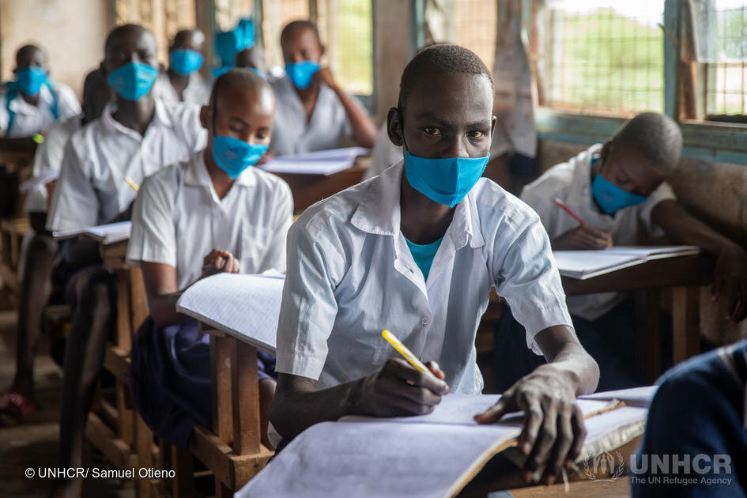

Impact of COVID-19 on Education
 Unemployment is not a new topic. It has been a problem for many years. But the pandemic has hit hard on people working on a paycheck-to-paycheck basis. COVID has created additional unique challenges to the employment sector (Venkatesh, 2020). The Lockdown during the pandemic affected low-income workers. A study indicates that up to one-third of United States jobs were vulnerable. And a majority of these jobs include jobs relating to food service, customer service, office support, and sales. Up to 86 percent of these jobs were paid less than $40,000 annually (Lund, Ellingrud, Hancock, Manyika, & Dua, 2020).
Students:
With the introduction of Google classroom, zoom, and google meet, students have changed their way of thinking and adapted to technology by uploading assignments, watching online lectures, and solving multiple-choice questions, which created the biggest change in regular academic sessions. College students have used the time to learn software courses such as MATLAB, R, Python, Java, and C programming. The postgraduate students have focused on NET, SET, GAT, and other competitive exams (Saima Firdaus & ShubhadaRamesh, 2021).

Teachers:
Teachers were challenged to learn new technologies and teach those to students for better education. They had to learn new teaching methods using PPTs, videos, and conferencing using zoom, google meet or other applications. This way of teaching changed the relationship between students and teaching making it stronger and closer. To improve the teaching methods and help students get subjects to understand better, teachers had to attend online conferences, meetings, webinars, quizzes, and orientation courses (Saima Firdaus & ShubhadaRamesh, 2021).
Researchers:
Faculty pursuing Ph.D. have gotten sufficient time for their research and study. Many researchers focused on and published their papers in various national and international journals. One of the fields where there were many publications during the pandemic is the medical field. Medical researchers worldwide have started studying and developing vaccines for COVID-19 (Saima Firdaus & ShubhadaRamesh, 2021).
Non-Teaching Staff:
The non-teaching staff is generally classified into two categories, clerk office staff, and peon. Typically, the office clerks and peons mostly spend their time in the office maintaining a clean environment and having enough time to focus on their health and wellbeing (Saima Firdaus & ShubhadaRamesh, 2021).